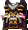
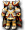

一般｜四重鎧甲｜天上－善屬性｜天上－惡屬性
名稱為橘色的是可以附魔的物品。另外，未鑑定名稱是該道具在未鑑定狀態下的名稱。
提供情報或編輯請求，請到情報提供公佈欄、編輯公佈欄。
一般
| 名稱 | 價格 | 限制 | 職業 | Wei | 取得方式 |
 槍騎兵服 槍騎兵服 | 2,600 | Lv1 | 戰修盜騎阿聖魔預吟 | 5 | 盧亞斯：鐵匠鋪 |
| 能力 | AC-13 |
| 名稱 | 價格 | 限制 | 職業 | Wei | 取得方式 |
| 月光服 | 2,600 | Lv1 | 戰修盜騎阿聖魔預吟 | 8 | 盧亞斯：鐵匠、 彩券 彩券 |
| 能力 | AC-13 |
| 名稱 | 價格 | 限制 | 職業 | Wei | 取得方式 |
| 風之衣 | 2,600 | Lv1 | 戰修盜騎阿聖魔預吟 | 11 | 盧亞斯：鐵匠裝備彩券彩券 |
| 能力 | AC-13 |
| 名稱 | 價格 | 限制 | 職業 | Wei | 取得方式 |
 湖之騎士服 湖之騎士服 | 2,600 | Lv1 | 戰修盜騎阿聖魔預吟 | 11 | 彩券 |
| 能力 | AC-7 |
| 名稱 | 價格 | 限制 | 職業 | Wei | 取得方式 |
| 騎士布衣 | 2,600 | Lv1 | 戰修盜騎阿聖魔預吟 | 11 | 彩券 |
| 能力 | AC-7 |
| 名稱 | 價格 | 限制 | 職業 | Wei | 取得方式 |
| 湖騎士鎧 | 62,750 | Lv1 | 戰修盜騎阿聖魔預吟 | 5 |  佩利哥布林、[佩利哥布林] 佩利哥布林、[佩利哥布林] |
| 能力 | AC-6、MC-2、AAR+1、SAR+1 |
| 名稱 | 價格 | 限制 | 職業 | Wei | 取得方式 |
 王國騎士鎧 王國騎士鎧 | 80,600 | Lv1 | 戰修盜騎阿聖魔預吟 | 11 |  閃魂蝸牛 閃魂蝸牛 |
| 能力 | AC-12、MC-2、STR+1 |
| 名稱 | 價格 | 限制 | 職業 | Wei | 取得方式 |
 羅亞爾加德 羅亞爾加德 | 77,230 | Lv1 | 戰修盜騎阿聖魔預吟 | 11 | 瓊基 |
| 能力 | AC-12、MC-2、STR+1 |
| 名稱 | 價格 | 限制 | 職業 | Wei | 取得方式 |
| 拉迪守衛 | 110,000 | Lv11 | 戰修盜騎阿聖魔預吟 | 14 | 盧亞斯：鐵匠鋪 |
| 能力 | AC-18 |
| 名稱 | 價格 | 限制 | 職業 | Wei | 取得方式 |
| 聖騎士鎖子鎧 | Lv11 | 戰修盜騎阿聖魔預吟 | 20 | 裝備彩券 | |
| 能力 | AC-15、MC-4、STR+1、DEX+1 |
| 名稱 | 價格 | 限制 | 職業 | Wei | 取得方式 |
| 吉約姆護甲 | 110,000 | Lv21 | 戰修盜騎阿聖魔預吟 | 10 | 彩券 |
| 能力 | AC-18 |
| 名稱 | 價格 | 限制 | 職業 | Wei | 取得方式 |
 邁安斯之甲 邁安斯之甲 | 110,000 | Lv21 | 戰修盜騎阿聖魔預吟 | 10 | 彩券 |
| 能力 | AC-18 |
| 名稱 | 價格 | 限制 | 職業 | Wei | 取得方式 |
| 阿維尼翁護甲 | 110,000 | Lv21 | 戰修盜騎阿聖魔預吟 | 10 | 彩券 |
| 能力 | AC-18 |
| 名稱 | 價格 | 限制 | 職業 | Wei | 取得方式 |
| 夏勒曼護甲 | 110,000 | Lv21 | 戰修盜騎阿聖魔預吟 | 10 | 彩券 |
| 能力 | AC-18 |
| 名稱 | 價格 | 限制 | 職業 | Wei | 取得方式 |
| 戴姆鎖鏈 | 151,910 | Lv21 | 戰修盜騎阿聖魔預吟 | 10 | 伊卡洛斯：鐵匠鋪 |
| 能力 | AC-23 |
| 名稱 | 價格 | 限制 | 職業 | Wei | 取得方式 |
| 吉約姆護甲[S型] | Lv21 | 戰修盜騎阿聖魔預吟 | 17 | 裝備彩券 | |
| 能力 | AC-19、MC-6、STR+2、CON+1、DEX+1 |
| 名稱 | 價格 | 限制 | 職業 | Wei | 取得方式 |
| 邁安斯之甲[S型] | 341,270 | Lv21 | 戰修盜騎阿聖魔預吟 | 19 | 裝備彩券 |
| 能力 | AC-19、MC-6、STR+2、CON+1、DEX+1 |
| 名稱 | 價格 | 限制 | 職業 | Wei | 取得方式 |
| 阿維尼翁護甲[S型] | 585,950 | Lv21 | 戰修盜騎阿聖魔預吟 | 22 | 裝備彩券 |
| 能力 | AC-19、MC-6、STR+2、CON+1、DEX+1 |
| 名稱 | 價格 | 限制 | 職業 | Wei | 取得方式 |
| 夏勒曼護甲[S型] | Lv21 | 戰修盜騎阿聖魔預吟 | 25 | 裝備彩券 | |
| 能力 | AC-19、MC-6、STR+2、CON+1、DEX+1 |
| 名稱 | 價格 | 限制 | 職業 | Wei | 取得方式 |
| 使節鎧甲 | 10 | Lv21 | 戰修盜騎阿聖魔預吟 | 11 | Q:百鬼夜行三十六之鬼 |
| 能力 | AC-23、MC-11、AAR+3、VD:7日 |
| 名稱 | 價格 | 限制 | 職業 | Wei | 取得方式 |
 法爾斯鎖甲 法爾斯鎖甲 | 130,000 | Lv31 | 戰修盜騎阿聖魔預吟 | 5 | 裝備彩券 |
| 能力 | AC-29 |
| 名稱 | 價格 | 限制 | 職業 | Wei | 取得方式 |
| 盧卡湖騎士鎧 | Lv31 | 戰修盜騎阿聖魔預吟 | 14 | 裝備彩券 | |
| 能力 | AC-25、MC-7、STR+2、CON+1、DEX+2 |
| 名稱 | 價格 | 限制 | 職業 | Wei | 取得方式 |
| 耶阿特鎧甲 | 10 | Lv31 | 戰修盜騎阿聖魔預吟 | 11 | Q:百鬼夜行四十一之鬼 |
| 能力 | AC-37、MC-13、AAR+3、VD:7日 |
| 名稱 | 價格 | 限制 | 職業 | Wei | 取得方式 |
 風騎士鎧 風騎士鎧 | 110,000 | Lv51 | 戰修盜騎阿聖魔預吟 | 17 | 盧亞斯：鐵匠、萊貝雅：鐵匠 |
| 能力 | AC-35 |
| 名稱 | 價格 | 限制 | 職業 | Wei | 取得方式 |
| 宏偉板甲 | 130,000 | Lv51 | 戰修盜騎阿聖魔預吟 | 5 | 潘朵拉之盒 |
| 能力 | AC-35 |
| 名稱 | 價格 | 限制 | 職業 | Wei | 取得方式 |
| 盧卡風騎士鎧 | 150,000 | Lv51 | 戰修盜騎阿聖魔預吟 | 17 | 裝備彩券 |
| 能力 | AC-34、MC-10、STR+3、CON+2、DEX+2 |
| 名稱 | 價格 | 限制 | 職業 | Wei | 取得方式 |
| 守護者襯墊服 | 10 | Lv51 | 戰修盜騎阿聖魔預吟 | 17 | Q:百鬼夜行 |
| 能力 | AC-39、MC-15、AAR+4、VD:7日 |
| 名稱 | 價格 | 限制 | 職業 | Wei | 取得方式 |
 騎士鎧 騎士鎧 | 5,000 | Lv61,FLv5 | 戰修盜騎阿聖魔預吟 | - | Q:扭曲命運的武器 |
| 能力 | AC-35 MC-18 AAR4% SAR4% HP10 SP30 |
| 備註 | 魯卡的贈禮。 |
| 名稱 | 價格 | 限制 | 職業 | Wei | 取得方式 |
 大地騎士鎧 大地騎士鎧 | 700,000 | Lv71 | 戰修盜騎阿聖魔預吟 | 10 | 伊卡洛斯：鐵匠鋪、雷比亞：鐵匠鋪 |
| 能力 | AC-41 |
| 名稱 | 價格 | 限制 | 職業 | Wei | 取得方式 |
| 盧卡大地騎士鎧 | 550,000 | Lv71 | 戰修盜騎阿聖魔預吟 | 20 |  發條鼠 發條鼠 |
| 能力 | AC-36、MC-12、STR+4、CON+2、DEX+3 |
| 名稱 | 價格 | 限制 | 職業 | Wei | 取得方式 |
| 艾德華達皮背心 | 50,000 | Lv71 | 戰修盜騎阿聖魔預吟 | 20 | 格蘭德派斯(紅) |
| 能力 | AC-38、AAR+4、SAR+4 |
| 備註 | 麻痺防禦(PCount:80) |
| 名稱 | 價格 | 限制 | 職業 | Wei | 取得方式 |
| 騎士皮背心 | 10 | Lv71 | 戰修盜騎阿聖魔預吟 | 20 | Q:百鬼夜行 |
| 能力 | AC-41、MC-17、AAR+4、VD:7日 |
| 名稱 | 價格 | 限制 | 職業 | Wei | 取得方式 |
 月光騎士鎧 月光騎士鎧 | 10,000,000 | Lv81 | 戰修盜騎阿聖魔預吟 | 23 | 卡雷瓦拉：鐵匠鋪 |
| 能力 | AC-48 |
| 名稱 | 價格 | 限制 | 職業 | Wei | 取得方式 |
| 盧卡月光騎士鎧 | 100,000 | Lv81 | 戰修盜騎阿聖魔預吟 | 21 | [幽靈弗里克爾] |
| 能力 | AC-39、MC-14、STR+5、CON+2、WIS+1、DEX+4 |
| 名稱 | 價格 | 限制 | 職業 | Wei | 取得方式 |
 盧卡皇家騎士鎧 盧卡皇家騎士鎧 | 200,000 | Lv91 | 戰修盜騎阿聖魔預吟 | 26 | [阿波莉娜]冰霜貴族(藍)、裝備彩券 |
| 能力 | AC-43、MC-16、STR+6、CON+2、WIS+1、DEX+5 |
| 名稱 | 價格 | 限制 | 職業 | Wei | 取得方式 |
| 戴安娜騎士鎧 | Lv91,FLv21 | 戰修盜騎阿聖魔預吟 | 23 | 埃尼斯特米、 冰霜貴族(紅) 冰霜貴族(紅) | |
| 能力 | AC-40、AAR+5、SAR+5 |
| 備註 | 麻痺防禦(PCount:80) |
| 名稱 | 價格 | 限制 | 職業 | Wei | 取得方式 |
| 漆黑全身鎧甲 | 10 | Lv91,FLv41 | 戰修盜騎阿聖魔預吟 | 23 | Q:百鬼夜行 |
| 能力 | AC-43、MC-19、AAR+5、VD:7日 |
| 名稱 | 價格 | 限制 | 職業 | Wei | 取得方式 |
 奧斯提亞騎士鎧甲 奧斯提亞騎士鎧甲 | 300,000 | Lv91,FLv21 | 戰修盜騎阿聖魔預吟 | 22 | Q:雷皮翁攻略 |
| 能力 | AC-37、MC-13 |
| 名稱 | 價格 | 限制 | 職業 | Wei | 取得方式 |
| 迪洛佐騎士鎧甲 | 300,000 | Lv95,FLv25 | 戰修盜騎阿聖魔預吟 | 22 |  船長拉爾普 船長拉爾普 |
| 能力 | AC-41、MC-15、HP+30、SP+30 |
| 名稱 | 價格 | 限制 | 職業 | Wei | 取得方式 |
| 奴隸騎士鎧 | 300,000 | Lv95,FLv35 | 戰修盜騎阿聖魔預吟 | 29 | Q:火龍的地城 |
| 能力 | AC-42、MC-21、STR+5、HP+100、SP+100 |
| 備註 | 中毒防禦(PCount:50)封印克里莫拉克夏的證明。可用火龍之鱗強化。 |
| 名稱 | 價格 | 限制 | 職業 | Wei | 取得方式 |
 迪捷雷德護甲 | 1,358,000 | Lv95,FLv35 | 戰修盜騎阿聖魔預吟 | 31 | Q:赫爾西翁製造 |
| 能力 | AC-41、MC-26、AAR+3、SAR+3、HP+120、SP+160 |
| 備註 | 據說是反抗神的天使們所穿的鎧甲 |
| 名稱 | 價格 | 限制 | 職業 | Wei | 取得方式 |
| 蒂亞雷德護甲 | 1,750,000 | Lv97,FLv45 | 戰修盜騎阿聖魔預吟 | 32 | Q:赫爾西翁升級 |
| 能力 | AC-44、MC-27、AAR+3、SAR+3、HP+150、SP+170 |
| 備註 | 強化迪捷雷德護甲的鎧甲。擁有卓越的防禦能力。 |
| 名稱 | 價格 | 限制 | 職業 | Wei | 取得方式 |
 大師護具 | Lv99,FLv61 | 戰修盜騎阿聖魔預吟 | 26 | Q:百鬼夜行 | |
| 能力 | AC-45、MC-21、AAR+5、HP+100、SP+100、VD:7日 |
| 名稱 | 價格 | 限制 | 職業 | Wei | 取得方式 |
| 皇家護衛鎧 | Lv99,FLv61 | 戰修盜騎阿聖魔預吟 | 26 | Q:百鬼夜行 | |
| 能力 | AC-45、MC-21、AAR+5、HP+100、SP+100 |
| 名稱 | 價格 | 限制 | 職業 | Wei | 取得方式 |
| 惡魔皮衣 | Lv99,FLv61 | 戰修盜騎阿聖魔預吟 | 26 |  火焰飛龍 火焰飛龍 | |
| 能力 | AC-45、MC-21、AAR+5、HP+100、SP+100 |
泰特拉鎧甲
| 名稱 | 價格 | 限制 | 職業 | Wei | 取得方式 |
| 泰特拉騎士甲 | Lv1 | 戰修盜騎阿聖魔預吟 | 0 | Q:四重鎧甲 | |
| 能力 | AC-12、MC-13、AAR+4、SAR+2 |
| 備註 | [不可轉讓][不可放置地面]以古代文明失落的物質製成的職業服。沒有重量，可變形成自己想要的形狀。 |
| 形狀變化 | Lv2 | Lv3 | Lv4 | Lv5 | Lv6 | Lv7 | Lv8 |
| 名稱 | 價格 | 限制 | 職業 | Wei | 取得方式 | | |
| 泰特拉騎士甲AG | Lv1 | 戰修盜騎阿聖魔預吟 | 0 | Q:四重鎧甲 | | | |
AC-24、MC-27、AAR+9、SAR+3
備註：[不可轉讓][不可放置地面]以古代文明失落的物質製成的職業服。沒有重量，可變形成自己想要的形狀。
| 形狀變化 | Lv2 | Lv3 | Lv4 | Lv5 | Lv6 | Lv7 | Lv8 |
| 名稱 | 價格 | 限制 | 職業 | Wei | 取得方式 | | |
| 泰特拉騎士甲UG | 2,000,000 | Lv1 | 戰修盜騎阿聖魔預吟 | 0 | Q:四重鎧甲 | | |
AC-40、MC-45、AAR+15、SAR+5
備註：[不可轉讓][不可放置地面]以古代文明失落的物質製成的職業服。沒有重量，可以變形為自己想要的形狀
| 形狀變化 | Lv2 | Lv3 | Lv4 | Lv5 | Lv6 | Lv7 | Lv8 |
天上－善屬性
| 名稱 | 價格 | 限制 | 職業 | Wei | 取得方式 |
 帕爾塞斯德拉克 帕爾塞斯德拉克 | 100,000 | Lv91,FLv31TLv1,BLv1 | 戰修盜騎阿聖魔預吟 | 28 | 斯坎達倫3 |
| 能力 | [4階段封印時]AC-41、MC-19、AAR+1、SAR+1、HP+60、SP+60 |
| 備註 | 帕爾塞斯貝殼寶珠3個可解放1階段 |
| 名稱 | 價格 | 限制 | 職業 | Wei | 取得方式 |
| 帕爾塞斯德拉克 | 100,000 | Lv91,FLv31TLv11,BLv11 | 戰修盜騎阿聖魔預吟 | 28 | |
| 能力 | AC-41、MC-19、AAR+1、SAR+1、HP+140、SP+140 |
| 備註 | 解除封印的帕爾塞斯德拉克爾 |
帕爾塞斯德拉克爾-升級
| 1階段 | 2階段 | 3階段 | 4階段 | 5階段 | 附魔值 |
| 無法升級 | 無法升級 | RAC1～3 | | | |
| 名稱 | 價格 | 限制 | 職業 | Wei | 取得方式 |
| 庫修倫德拉克爾 | 200,000 | Lv93,FLv41TLv31,BLv31 | 戰修盜騎阿聖魔預吟 | 30 | 歐佩爾３ |
[4階段封印時]AC-42、MC-22、AAR+2、SAR+2、HP+70、SP+70
備註：
| 名稱 | 價格 | 限制 | 職業 | Wei | 取得方式 |
| 庫修倫德拉克爾 | 200,000 | Lv93,FLv41TLv41,BLv41 | 戰修盜騎阿聖魔預吟 | 30 | |
| 能力 | AC-42、MC-22、AAR+2、SAR+2、HP+150、SP+150 |
| 備註 | 解除封印的庫修倫德拉克爾 |
庫修倫德拉克爾-升級
| 1階段 | 2階段 | 3階段 | 4階段 | 5階段 | 附魔值 |
| RAC1～3 | | | | | |
| 名稱 | 價格 | 限制 | 職業 | Wei | 取得方式 |
| 露米娜德拉克爾 | 300,000 | Lv95,FLv51TLv61,BLv61 | 戰修盜騎阿聖魔預吟 | 32 | 格亨納2樓監獄 |
[4階段封印時]AC-43、MC-25、AAR+3、SAR+3、HP+80、SP+80
備註：每解除1次HP+20、SP+20
| 名稱 | 價格 | 限制 | 職業 | Wei | 取得方式 |
| 露米娜德拉克爾 | 300,000 | Lv95,FLv51TLv71,BLv71 | 戰修盜騎阿聖魔預吟 | 32 | |
| 能力 | AC-43、MC-25、AAR+3、SAR+3、HP+160、SP+160 |
| 備註 | 解除封印的露米娜德拉克爾 |
露米娜德拉克爾-升級
| 1階段 | 2階段 | 3階段 | 4階段 | 5階段 | 附魔值 |
| RAC1～4 | | | | | |
| 名稱 | 價格 | 限制 | 職業 | Wei | 取得方式 |
| 莉希涅德拉克爾 | 400,000 | Lv97,FLv61TLv81,BLv81 | 戰修盜騎阿聖魔預吟 | 34 | |
[4階段封印時]AC-44、MC-28、AAR+3、SAR+3、HP+90、SP+90
備註：每解除1次HP+20、SP+20
| 名稱 | 價格 | 限制 | 職業 | Wei | 取得方式 |
| 莉希涅德拉克爾 | 400,000 | Lv97,FLv61TLv91,BLv91 | 戰修盜騎阿聖魔預吟 | 34 | |
| 能力 | AC-44、MC-28、AAR+3、SAR+3、HP+170、SP+170 |
| 備註 | 解除封印的莉希涅德拉克爾 |
莉希涅德拉克爾-升級
天上－惡屬性
| 名稱 | 價格 | 限制 | 職業 | Wei | 取得方式 |
 斯坎達倫迪彭德 斯坎達倫迪彭德 | 100,000 | Lv91,FLv31TLv1,BLv1 | 戰修盜騎阿聖魔預吟 | 28 | 帕爾塞斯3夏莫科 |
| 能力 | [4階段封印時]AC-41、MC-19、AAR+1、SAR+1、HP+60、SP+60 |
| 備註 | 斯堪達隆貝殼寶珠3個可解放1階段 |
| 名稱 | 價格 | 限制 | 職業 | Wei | 取得方式 |
| 斯坎達倫迪彭德 | 100,000 | Lv91,FLv31TLv11,BLv11 | 戰修盜騎阿聖魔預吟 | 28 | |
| 能力 | AC-41、MC-19、AAR+1、SAR+1、HP+140、SP+140 |
| 備註 | 解除封印的斯坎達倫迪彭德 |
斯坎達倫迪彭德-升級
| 1階段 | 2階段 | 3階段 | 4階段 | 5階段 | 附魔值 |
| 無法升級 | 無法升級 | RAC1～3 | | | |
| 名稱 | 價格 | 限制 | 職業 | Wei | 取得方式 |
| 歐佩爾迪彭德 | 200,000 | Lv93,FLv41TLv31,BLv31 | 戰修盜騎阿聖魔預吟 | 30 |  特里奧頓(橙) 特里奧頓(橙) |
[4階段封印時]AC-42、MC-22、AAR+2、SAR+2、HP+70、SP+70
備註：
| 名稱 | 價格 | 限制 | 職業 | Wei | 取得方式 |
| 歐佩爾迪彭德 | 200,000 | Lv93,FLv41TLv41,BLv41 | 戰修盜騎阿聖魔預吟 | 30 |  巴哈姆特 巴哈姆特 |
| 能力 | AC-42、MC-22、AAR+2、SAR+2、HP+150、SP+150 |
| 備註 | 解除封印的歐佩爾迪彭德 |
歐佩爾迪彭德-升級
| 1階段 | 2階段 | 3階段 | 4階段 | 5階段 | 附魔值 |
| RAC1～3 | | | | | |
| 名稱 | 價格 | 限制 | 職業 | Wei | 取得方式 |
 蓋赫納迪彭德 蓋赫納迪彭德 | 300,000 | Lv95,FLv51TLv61,BLv61 | 戰修盜騎阿聖魔預吟 | 32 | 露米娜神殿謁見之間1、露米娜神殿謁見之間2 |
[4階段封印時]AC-43、MC-25、AAR+3、SAR+3、HP+80、SP+80
備註：每解除1次HP+20、SP+20
| 名稱 | 價格 | 限制 | 職業 | Wei | 取得方式 |
| 蓋赫納迪彭德 | 300,000 | Lv95,FLv51TLv71,BLv71 | 戰修盜騎阿聖魔預吟 | 32 |  阿瑟拉 阿瑟拉 |
| 能力 | AC-43、MC-25、AAR+3、SAR+3、HP+160、SP+160 |
| 備註 | 解除封印的蓋赫納迪彭德 |
蓋赫納迪彭德-升級
| 1階段 | 2階段 | 3階段 | 4階段 | 5階段 | 附魔值 |
| RAC1～3 | | | | | |
| 名稱 | 價格 | 限制 | 職業 | Wei | 取得方式 |
| 戴蒙尼恩迪彭德 | 400,000 | Lv97,FLv61TLv81,BLv81 | 戰修盜騎阿聖魔預吟 | 34 | 莉希涅聖光之門 |
[4階段封印時]AC-44、MC-28、AAR+3、SAR+3、HP+90、SP+90
備註：每解除1次HP+20、SP+20
| 名稱 | 價格 | 限制 | 職業 | Wei | 取得方式 |
| 戴蒙尼恩迪彭德 | 400,000 | Lv97,FLv61TLv91,BLv91 | 戰修盜騎阿聖魔預吟 | 34 | |
| 能力 | AC-44 MC-28 AAR+3 SAR+3 HP170 SP170 |
| 備註 | 解除封印的戴蒙尼恩迪彭德 |
戴蒙尼恩迪彭德-升級